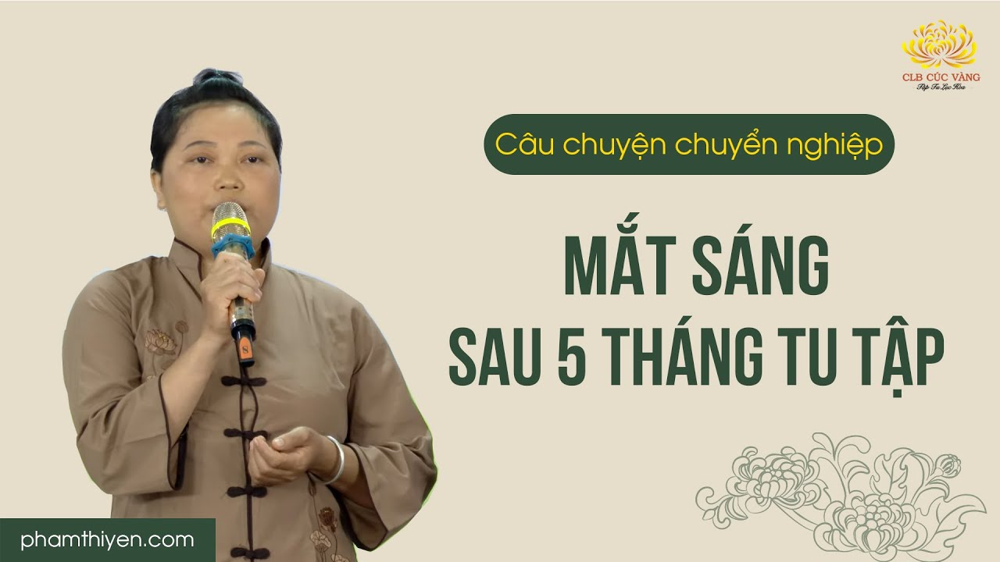
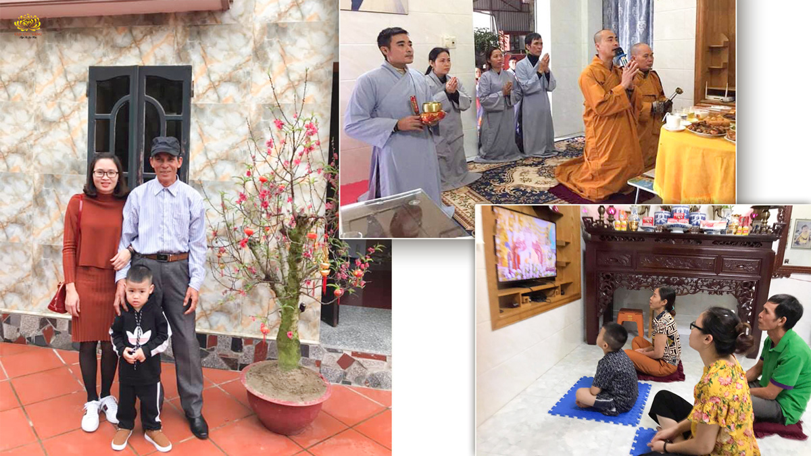
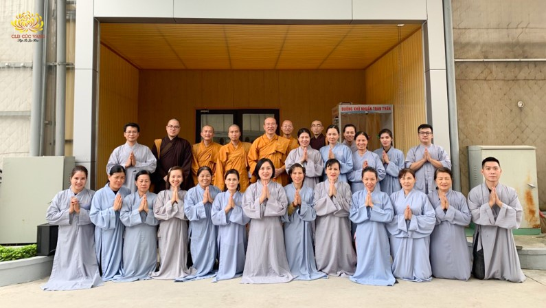
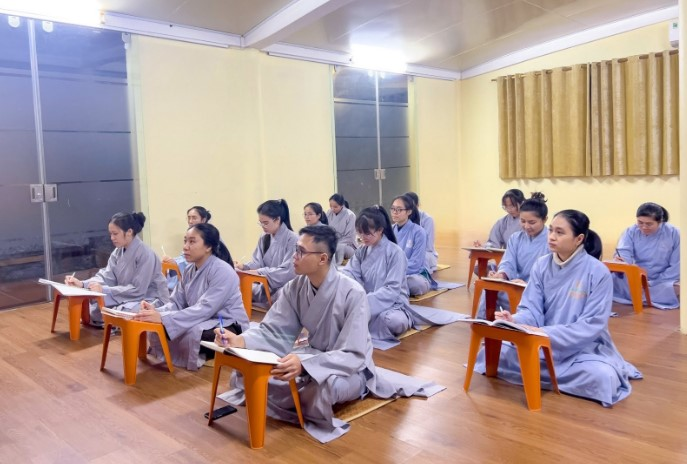
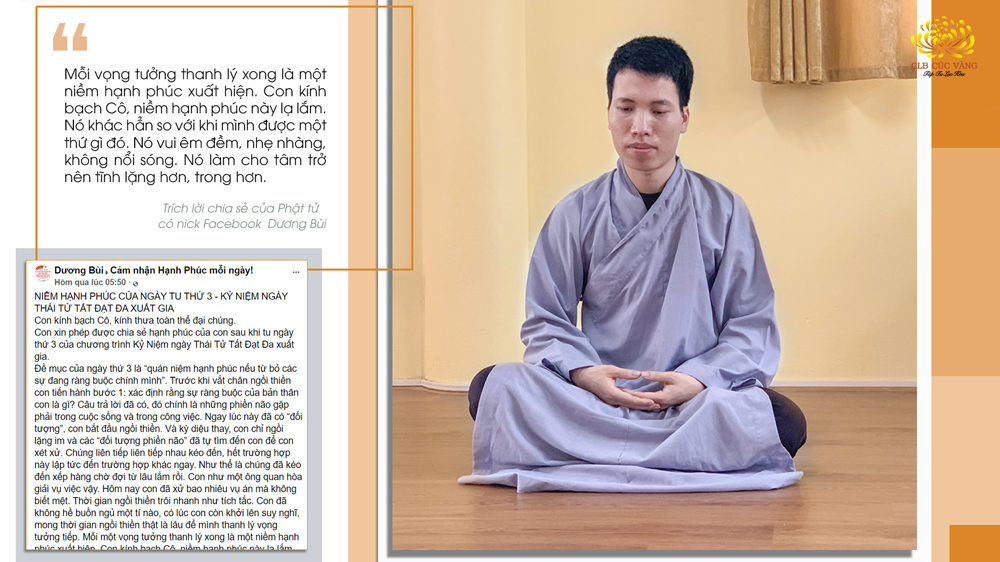
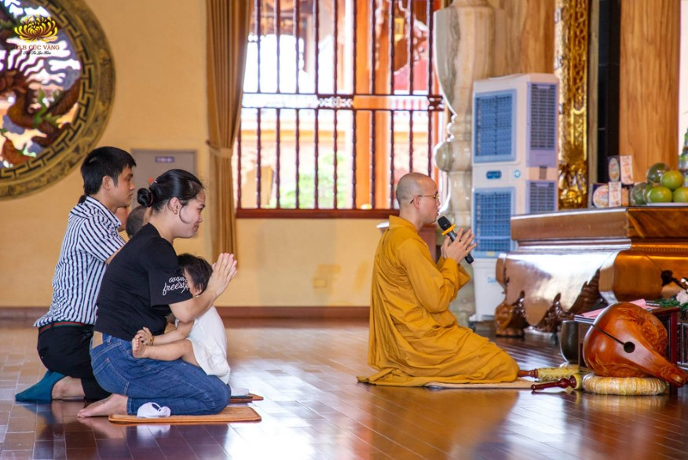

[Video] Cứu chồng từ cửa tử nhờ lòng tin Tam Bảo và phát nguyện tu tập chân thật
Chồng bị bệnh đau lưng và gia đình cũng đã đi chạy chữa ở bệnh viện nhưng mỗi bệnh viện
Chi tiết[Video] Bị bắt nạt, chèn ép nơi làm việc - Chuyển nghiệp nhanh chóng sau 18 ngày tu tập
Làm việc và học tập tại nước ngoài và bị đồng nghiệp chèn ép và chỉ trách, tìm mọi lỗi để bắt bẻ...và còn bị hăm dọa đến tinh thần. Qua sự tu trong đạo tràng chỉ sau 18 ngày tu tập mọi việc đã được chuyển hóa.
Chi tiết
[Video] Mắt bị mờ tự sáng trở lại sau 5 tháng tu tập Phật Pháp ở chùa Ba Vàng
Mời quý đạo hữu và các bạn cùng theo dõi video.
Chi tiếtBất ngờ khi biết tin mình đã có thai sau 4 tháng tu tập
Khi có kết quả, bác sĩ nói chúc mừng chị đã có thai, lúc đó chị bối rối không khóc cũng không cười được vì quá bất ngờ.
Chi tiếtChuyển hóa hiện tượng đau quặn bụng - sự nhiệm màu của Pháp sám hối
Khi chuẩn bị vào buổi lễ, cháu thấy bụng có dấu hiệu đau quặn, ngồi một lúc thì cơn đau mạnh lên, tăng dần, cảm giác như muốn kéo người gập lại.
Chi tiết
Bố hết bảo thủ, biết lắng nghe; gia đình tin sâu Phật Pháp sau ngày quý Thầy về nhà làm lễ
Cuộc sống của gia đình con đã thay đổi hoàn toàn kể từ ngày gia đình con thỉnh quý Thầy ở chùa Ba Vàng về an vị lô hương cho gia đình.
Chi tiếtCó giàu sang đến đâu cũng không bằng việc thấy được đạo…
Qua bài giảng trạch của Cô về lời của Đức Phật dạy có giàu sang đến mấy cũng không bằng việc thấy được đạo, con hiểu được rằng, việc thấy được đạo thì mới có thể đi ra khỏi chỗ khổ, lục đạo luân hồi; còn giàu sang thì đi vào chỗ khổ
Chi tiết
Cảm nhận hạnh phúc khi tu tập thiền qua bài Pháp: “Ta đi tìm ta, ta là ai?”
Từ trước tới nay, con mông lung với cái “Ta” này, nay nhờ có Cô mà con được hiểu theo đúng chân lý. "Ta" chính là tổng nghiệp tạo nên cái "Ta" hiện tại, còn tôi phải là tôi của giác ngộ, trong Pháp, trong năm giới và tám giới.
Chi tiết[Video] Trở lại "làm người" sau 2 tháng tu tập - Thoát khỏi 10 năm đau khổ do tâm linh tác động
Ai đã từng bị vong linh nhập thì thấy khổ vô cùng. Mình biết người ta ở bên trong mình nhưng mình không làm gì được
Chi tiếtLần này, Cô đã dạy cho cháu một bài học (tuy cũ, nhưng đối với cháu thì cũng có thể gọi là mới, vì bây giờ cháu mới chịu tư duy để thực sự hiểu), đó là: Đừng bao giờ đổ vạ cho hoàn cảnh, đừng đổ lỗi là do bản thân chưa có kinh nghiệm;
Chi tiếtĐột quỵ: Thoát khỏi hiểm nguy trong gang tấc nhờ nương tựa Tam Bảo
"Vô thường" khiến cho Hạnh Đức nhận ra mình một cách rõ ràng hơn. Tin sâu hơn nơi mình đang nương tựa và con đường mình sẽ tiếp tục bước đi.
Chi tiếtTìm được công việc mới nhờ hồi hướng công đức Lục Hòa sau 7 ngày
Sau 4 vòng phỏng vấn, con đã được nhận vào một quỹ đầu tư có uy tín của Mỹ - nơi có thu nhập, công việc ổn định và đặc biệt là chế độ ưu đãi và quan tâm nhân viên tuyệt vời. Hiện tại, con đã là nhân viên chính thức của quỹ từ ngày 02/05/2021.
Chi tiết[Video] Chữa khỏi bệnh ung thư đại tràng bằng tâm linh!
Oan gia trái chủ là hiện tượng những chúng sinh mà chúng ta đã gây hại từ vô thủy kiếp
Chi tiết
Cảm nhận hạnh phúc khi tu tập theo chương trình Kính mừng Phật đản
Qua các bài giảng của Sư Phụ, bài trạch Pháp của Cô cháu đã cảm nhận được sự nhiệm màu của việc hồi hướng công đức trong ngày tu Bát Quan Trai thì niềm tin của cháu đã lớn hơn nhiều.
Chi tiếtKhi bị hiện tượng ngứa và bong vảy, cô Loan đã bạch bài bạch hướng đến các oan gia trái chủ trên thân bệnh của mình. Sau khoảng 10 ngày, dù có hôm nhớ, hôm quên nhưng tai của cô Loan không còn bị tình trạng ngứa hay bong vảy nữa.
Chi tiết[Video] Câu chuyện của người "trở về từ cõi chết"
Cô Vân bị bệnh hiểm nghèo, mất hoàn toàn ý thức, không nói được, không ngồi dậy được; thậm chí có những lần tim ngừng đập và gia đình đã chuẩn bị lo hậu sự.
Chi tiết
Hạnh phúc từ việc tập quán niệm sự từ bỏ vĩ đại của Thái tử Tất Đạt Đa
Con thật sự không thể cầm được nước mắt khi nghĩ đến hình ảnh và lý tưởng xuất gia cao quý của Thái tử Tất Đạt Đa
Chi tiết[Video] 13 năm đau khổ vì thế giới vô hình tác động - Nay đã chuyển hóa nhiệm màu nhờ Phật Pháp!
Sau khi ông nội tôi mất, chính bản thân tôi lại bị hương linh nhập vào người xưng là ông nội. Tôi cảm thấy cõi tâm linh là có thật và không thể có giải pháp khoa học nào chữa khỏi được bệnh tâm linh”.
Chi tiếtNguy cơ bị liệt cả đời - Sau khi phát nguyện tu tập, chỉ 12 ngày đã được chuyển hóa
Kỳ diệu thay! Ngay sau ngày phát nguyện, Quyết đã không còn nôn liên tục nữa, mà có thể ăn uống một chút. Nửa người không cử động của Quyết, bây giờ cấu nhẹ vào cũng cảm giác tê tê, ngón tay có thể co lên co xuống được.
Chi tiết[Video] Đau ruột thừa - Phát nguyện tu tập - Bác sĩ ngạc nhiên "Sao lạ thế?" vì kết quả bất ngờ!
Đau ruột thừa - Phát nguyện tu tập - Bác sĩ ngạc nhiên "Sao lạ thế?" vì kết quả bất ngờ!
Chi tiếtChuyển hóa vô sinh thứ phát vì dính tử cung diện rộng nhờ tu Phật Pháp
Sau khi hết 49 ngày tu tập, Linh đi khám và phát hiện mình đã có thai - đây là điều mà cả hai vợ chồng Linh đều không ngờ tới.
Chi tiết[Video] Chuyển hóa hiện tượng viêm da mưng mủ sau khi biết đến chùa Ba Vàng
Viêm da dị ứng là bệnh ngoài da, tuy không gây nguy hiểm đến tính mạng
Chi tiếtGiải quyết mâu thuẫn với đồng nghiệp nhờ thực hành từ bi, yêu thương
Được học Phật Pháp, con tư duy đây là nhân quả của con nên không oán hận hay ghét em. Thay vào đó, con cố gắng thay đổi hành động và suy nghĩ của mình để trở nên tốt hơn
Chi tiết[Video] Vợ chồng hiếm muộn nỗ lực tu tập Phật Pháp - Sau 5 tháng mang thai bé trai
Sau một thời gian áp dụng các phương pháp hỗ trợ việc mang thai nhưng không có kết quả, nhân duyên Hằng đã biết đến Phật Pháp và cùng chồng mình nỗ lực tu tập. Chỉ 5 tháng sau, niềm vui bất ngờ đã đến với gia đình.
Chi tiết
Tu tập Phật Pháp gặp duyên lành sinh con sau nhiều năm chữa hiếm muộn
Hai vợ chồng Ân đã về chùa Ba Vàng và được nghe chư Tăng giảng về nhân quả, được hướng dẫn sám hối, tu tập, tụng kinh hồi hướng về việc không thể có con
Chi tiết[Video] Đau bụng triền miên nửa tháng, liền khỏi sau khi vừa phát nguyện tu tập
Để hiểu rõ hơn về câu chuyện chuyển hóa hiện tượng đau bụng bất thường trong vòng nửa tháng không dứt của bé Gia Bảo nhờ tu tập Phật Pháp, xin kính mời quý Phật tử và các bạn cùng theo dõi video dưới đây!
Chi tiết[Video] Khỏi lao cột sống nhờ tu tập Phật Pháp tại chùa Ba Vàng
“Tôi bị đau ngang ngực, bác sĩ bảo tôi bị lao cột sống, bị nằm liệt 1 năm trời. Tôi đi hết chỗ này đến chỗ kia khám bệnh nhưng người ta bảo không chữa được, bây giờ chỉ cho về nằm một chỗ thôi.
Chi tiết
Sốt rét nguy kịch do nhiễm ký sinh trùng: Chuyển hóa nhờ Phật Pháp
Sốt li bì; hồng cầu, tiểu cầu giảm nghiêm trọng... thế nhưng chỉ sau 2 ngày, bạn Long đã thoát nạn và nhanh chóng hồi phục trong sự bất ngờ của các y bác sĩ nhờ làm những điều này…
Chi tiết[Video] Tu tập chuyển hóa hiện tượng con tăng động hay ngã và tự đánh vào đầu
“Thời gian gần đây, con trai con (hơn 1 tuổi) có những biểu hiện bất thường: Mỗi khi tức giận, cháu đều dùng tay đánh mạnh vào đầu, tần suất ngày càng nhiều
Chi tiết